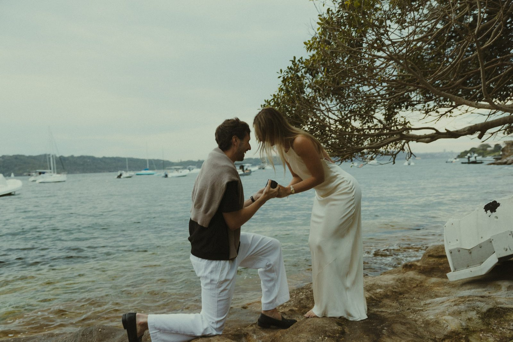
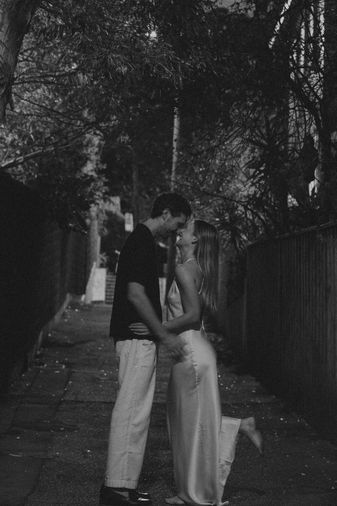

Our Story
Two people, one long conversation

[This is where your story goes: how you met, the years in between, that afternoon by the water. Two or three short paragraphs read best here.]
Send over the real version whenever you're ready and I'll drop it right in.

She said yes.